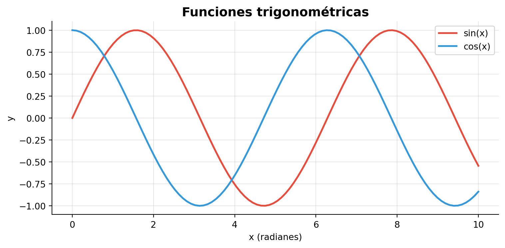
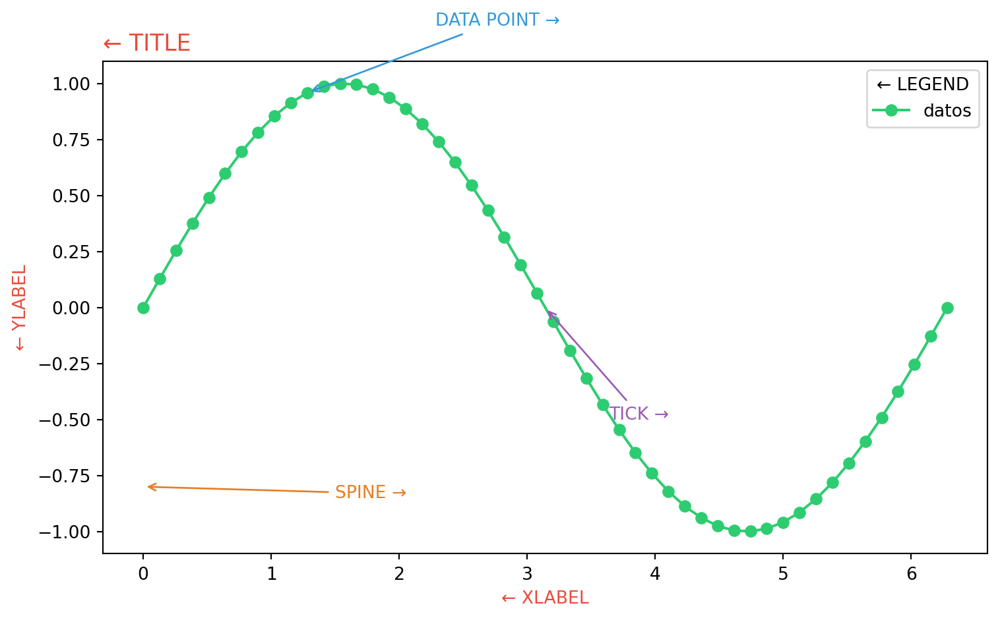
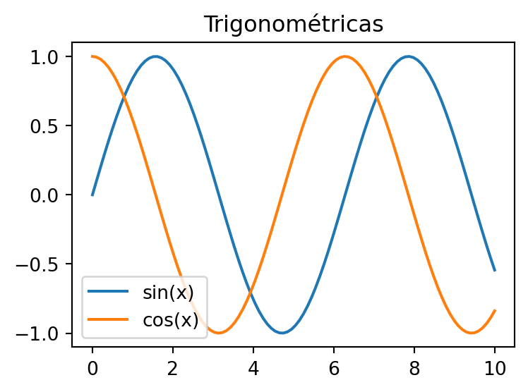

Contando historias con datos
De matplotlib a Plotly: visualización interactiva
Contando historias con datos
De matplotlib a Plotly: visualización interactiva con Python

¿Por qué visualizar datos?
“Una imagen vale más que mil filas en una tabla.”
- Los humanos procesamos información visual 60,000 veces más rápido que texto
- Una buena visualización revela patrones ocultos en los datos
- Las visualizaciones interactivas permiten explorar y contar historias
Bloque 1: Anatomía de una figura
Anatomía de una figura matplotlib
Cada figura en matplotlib tiene una estructura jerárquica:
Figure (lienzo completo)
└── Axes (área de graficación)
├── Title (título)
├── XAxis / YAxis (ejes)
│ ├── Label (etiqueta del eje)
│ ├── Ticks (marcas)
│ └── Tick Labels (etiquetas de marcas)
├── Spines (bordes)
├── Legend (leyenda)
└── Plot data (líneas, barras, puntos...)Construyendo una figura pieza por pieza
Ejercicio mental: identifica los elementos

Bloque 2: De matplotlib a Plotly
¿Por qué Plotly?
| Característica | matplotlib | Plotly |
|---|---|---|
| Interactividad | Estático (imagen) | Nativa (hover, zoom, pan) |
| Web | Requiere backend | HTML nativo |
| Hover/tooltips | Manual y limitado | Automático |
| Exportación | PNG, SVG, PDF | HTML, PNG, SVG, PDF |
| Curva de aprendizaje | Moderada | Baja con plotly.express |
| Integración Quarto | Como imagen | Como widget interactivo |
La misma figura: matplotlib vs Plotly
matplotlib (estático)

Plotly (interactivo)
Plotly Express: la interfaz rápida
Tip
Pasa el cursor sobre los puntos. Haz zoom con scroll. Doble clic para resetear.
Integración con Quarto
Esta presentación es la prueba:
- Cada celda de código Python se ejecuta al renderizar
- Las figuras Plotly se insertan como widgets interactivos
- Se puede exportar a HTML, PDF, o presentar en vivo
Bloque 3: La galería como herramienta
La galería de Plotly
La mejor forma de aprender Plotly es copiar y adaptar desde la galería oficial:
Patrón de trabajo:
- Buscar el tipo de gráfico que necesitas
- Copiar el código de ejemplo
- Entender la estructura de datos que requiere
- Adaptar con tus propios datos
Important
Lo más importante no es memorizar la API, sino entender qué estructura de datos necesita cada gráfico.
Concepto clave: datos en formato long
La mayoría de gráficos en plotly.express esperan datos en formato long (tidy):
Wide (ancho)
| país | 2020 | 2021 | 2022 |
|---|---|---|---|
| MX | 10 | 12 | 15 |
| CO | 8 | 9 | 11 |
→
Long (largo)
| país | año | valor |
|---|---|---|
| MX | 2020 | 10 |
| MX | 2021 | 12 |
| MX | 2022 | 15 |
| CO | 2020 | 8 |
| CO | 2021 | 9 |
| CO | 2022 | 11 |
Ejemplo 1: Barras agrupadas
Ejemplo 2: Series temporales con hover
Ejemplo 3: Mapa coroplético
Ejercicio: reproduce un gráfico de la galería
- Ve a plotly.com/python/
- Elige un tipo de gráfico que te interese
- Copia el ejemplo y ejecútalo
- Identifica: ¿qué estructura de datos necesita?
- Adapta el ejemplo usando datos de
gapminder
Tip
Tipos recomendados para explorar:
Bloque 4: Datos de la Agenda 2030
Objetivos de Desarrollo Sostenible (ODS)
La Agenda 2030 de Naciones Unidas define 17 Objetivos de Desarrollo Sostenible.
Vamos a trabajar con el indicador ODS 3.2.1:
Tasa de mortalidad de menores de 5 años (por cada 1,000 nacidos vivos)
Fuentes de datos abiertos:
- API de la ONU: unstats.un.org/sdgapi/
- Banco Mundial: data.worldbank.org
- datos.gob.es (España): datos.gob.es
Paso 1: Cargar y explorar los datos
Dimensiones: (84, 5)
Países: 12
Período: 1990 - 2020
Columnas: ['pais', 'iso_alpha', 'año', 'mortalidad_menores_5', 'region']| pais | iso_alpha | año | mortalidad_menores_5 | region | |
|---|---|---|---|---|---|
| 0 | Argentina | ARG | 1990 | 28.7 | América del Sur |
| 1 | Argentina | ARG | 1995 | 23.5 | América del Sur |
| 2 | Argentina | ARG | 2000 | 20.2 | América del Sur |
| 3 | Argentina | ARG | 2005 | 16.7 | América del Sur |
| 4 | Argentina | ARG | 2010 | 14.1 | América del Sur |
| 5 | Argentina | ARG | 2015 | 11.1 | América del Sur |
| 6 | Argentina | ARG | 2020 | 8.7 | América del Sur |
| 7 | Bolivia | BOL | 1990 | 122.5 | América del Sur |
| 8 | Bolivia | BOL | 1995 | 99.8 | América del Sur |
| 9 | Bolivia | BOL | 2000 | 80.4 | América del Sur |
Note
Los datos ya están en formato long — exactamente lo que Plotly Express necesita.
Paso 2: Líneas de tiempo por país
Paso 3: Dumbbell chart — progreso 1990 vs 2020
Paso 4: Mapa coroplético de la región
Cierre
Recursos
| Recurso | URL |
|---|---|
| Galería Plotly | plotly.com/python/ |
| Plotly Express API | plotly.com/python-api-reference/ |
| Quarto + Plotly | quarto.org/docs/interactive/ |
| API ODS (ONU) | unstats.un.org/sdgapi/ |
| Banco Mundial | data.worldbank.org |
| Datos abiertos ODS (ES) | datos.gob.es |
| Código de esta sesión | Este repositorio |
Recapitulación
- matplotlib → entender la anatomía de una figura
- Plotly Express → crear figuras interactivas con una línea
- La galería → copiar, entender la estructura de datos, adaptar
- Datos reales → aplicar todo con indicadores ODS de la Agenda 2030
Note
La clave no es memorizar funciones, sino entender qué estructura de datos necesita cada gráfico y saber buscar en la galería.
¡Gracias!
Explora, copia, adapta, y cuenta tu historia con datos.